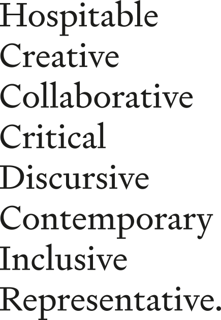

Brand
Signifier as typeface, developed by Kris Sowersby for Klim. A brutalist response to 17th century type design.
Titles to be set in Signifier and body to be set in EB Garamond (available free from Google Fonts).
For nearly three decades the UN has been bringing together almost every country on earth for global climate summits – called COPs – which stands for ‘Conference of the Parties’. In that time climate change has gone from being a fringe issue to a global priority.
This year will be the 26th annual summit – giving it the name COP26. With the UK as President, COP26 takes place in Glasgow.
In the run up to COP26 the UK is working with every nation to reach agreement on how to tackle climate change. More than 190 world leaders will arrive in Scotland. Joining them will be tens of thousands of negotiators, government representatives, businesses and citizens for twelve days of talks.
Not only is it a huge task but it is also not just yet another international summit. Most experts believe COP26 has a unique urgency.
To understand why, it’s necessary to look back to another COP.
For nearly three decades the UN has been bringing together almost every country on earth for global climate summits – called COPs – which stands for ‘Conference of the Parties’. In that time climate change has gone from being a fringe issue to a global priority.
This year will be the 26th annual summit – giving it the name COP26. With the UK as President, COP26 takes place in Glasgow.
In the run up to COP26 the UK is working with every nation to reach agreement on how to tackle climate change. More than 190 world leaders will arrive in Scotland. Joining them will be tens of thousands of negotiators, government representatives, businesses and citizens for twelve days of talks.
Not only is it a huge task but it is also not just yet another international summit. Most experts believe COP26 has a unique urgency.
To understand why, it’s necessary to look back to another COP.
Instagram slides
Site
Homepage
Bold full green background with white text.
Home page opening with events front and centre, highlight the 4 most recent events and include wording to highlight when they are taking place and special styling to let people know if the event is happening today.
Simplified navigation with basic sections.
Hidden search and tag container revealed on clicking the search button.
A secondary light mode will be selectable for accessibility.
List of the types of reflection
Simple lightweight player for audio files.
Colors
Green as primary colours with 4 shades and a set of complimentary colours derived by analagous colour pattern.